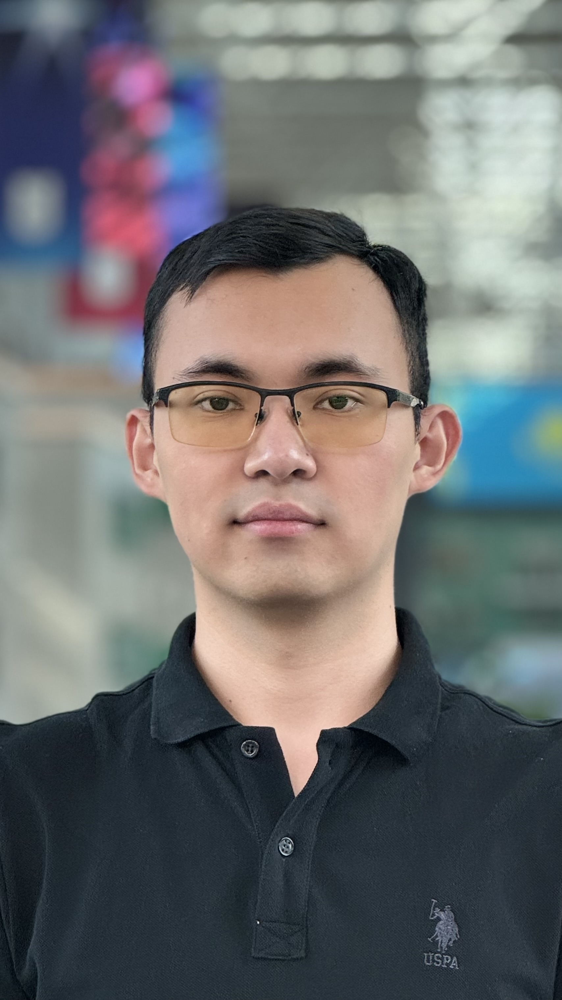

Adilet Shynggys
Mechanical & Aerospace Engineering Student | Heat Transfer, Boiling & Surface Engineering for Power Plants
"Advancing nuclear energy to make clean, reliable power accessible to all."
I am a final-year Mechanical & Aerospace Engineering student at Nazarbayev University, ranked 1st in my cohort with a 3.86 GPA. I work on heat transfer and thermodynamics for cleaner, more efficient power plants, nuclear plants in particular. A thermal plant can only convert as much heat as its surfaces can safely move, and I want to engineer those surfaces directly: how microscale geometry, texture, and wettability shape boiling, and how far they can push back the boiling crisis that limits how hard a reactor core can be run.
I started at the smallest scale. In the Energy Conversion Laboratory, our group fabricated triboelectric nanogenerators by electrospinning and silicone casting, varying surface morphology and material pairing to raise output power density by 15–20%. I ran the performance characterization by hand across humidity and cyclic-durability testing and built the electrical workflow behind it. That work contributed to a co-authored publication in Small, my first-author poster won Best Research Poster at the Belt & Road Initiative Conference, and it taught me that the surface, more than the bulk material, decides how a device performs.
With Prof. Amgad Salama, our group designed an inverted photomask and fabricated our first successful sample of tapered SU-8 microchannels on silicon, in a clean room where a single particle can ruin a wafer and five hours of work. The width gradient creates a Laplace-pressure asymmetry that should drive wetting liquids toward the narrow end with no pump and no moving parts; transport experiments across taper geometries are the next step. What interests me is what this means for a hot surface: when a heated wall dries out, recovery depends on how quickly liquid returns, and geometry is a less-explored lever on that return than roughness, wettability, or porosity.
My training was further shaped by a visiting exchange at the University of Hong Kong, where I collaborated with Prof. Wei Yan on undergraduate curriculum design and worked with Prof. Homayoon Kazerooni (UC Berkeley) on a 3D-printed public art installation.
Objective for Fall 2027
Seeking graduate admission in Mechanical Engineering (SM leading to Ph.D., or direct Ph.D.) to research heat transfer and boiling on engineered surfaces: using microscale geometry and wettability to raise critical heat flux and improve the efficiency of power plants, nuclear plants in particular. My longer-term aim is an academic position teaching thermodynamics, heat transfer, fluid mechanics, engineering materials, and structural mechanics, while leading a research group on heat transfer and surface engineering for power systems.
Research Focus
Surface Engineering for Plant Efficiency
A thermal plant can only convert as much heat as its surfaces can move, through fuel cladding, steam generators, and condensers. Designing surface geometry, texture, and wettability to improve boiling and condensation, so that more of a plant's heat becomes useful work.
Boiling & the Boiling Crisis
Subcooled and nucleate boiling, critical heat flux, and departure from nucleate boiling: the limit that sets how much power a reactor core can safely produce. Correlations predict when the crisis occurs; the mechanism that triggers it, and how surface design shifts it, remain open questions.
Capillary Transport & Wetting
Microfluidic principles for moving liquid without pumps: Laplace-pressure asymmetry in tapered channels, contact-line motion, and rewetting, meaning how quickly liquid returns to a surface that has begun to dry out.
Reactor Thermal-Hydraulics
The plant-scale context: coolant flow, temperature rise, and thermal margins in a pressurized water reactor, and the design choices they constrain. This is the setting of my VVER-1200 capstone project.
Education
Nazarbayev University, Astana, Kazakhstan
B.Eng. Mechanical & Aerospace Engineering — Expected June 2027
GPA: 3.86/4.00 (Ranked 1st in Cohort) • Dean's List (4 consecutive semesters)
Coursework: Engineering Thermodynamics; Fluid Mechanics; Structural Mechanics; Materials and Manufacturing; Numerical Methods in Engineering; Differential Equations and Linear Algebra; Engineering Dynamics I–II; CAD.
In progress (2026–27): Heat and Mass Transfer; Mechanical Systems Design; Aerospace Propulsion.
The University of Hong Kong — Visiting Exchange Student
Department of Mechanical Engineering • Spring 2026
Coursework in Energy Conversion Systems, Design and Manufacture, and Additive Manufacturing.
- Collaborated with Prof. Wei Yan on curriculum design for an undergraduate course.
- Independent extracurricular collaboration with Prof. Homayoon Kazerooni (UC Berkeley) on a 3D-printed interactive art installation.
Research & Design Experience
Capillary-Driven Surface Engineering
August 2026 – Present • Nazarbayev University • Advisor: Prof. Amgad Salama
Studying how microchannel taper geometry moves liquid with no pump, toward understanding how geometry can speed the rewetting of heated surfaces. The taper creates a Laplace-pressure asymmetry that should drive wetting liquids toward the narrow end and non-wetting liquids toward the wide end. Our group designed the inverted photomask and carried out the full clean-room photolithography process, from pre-treatment through post-treatment, producing a first successful sample of tapered SU-8 microchannels on silicon. Fabrication is the hardest part: a single particle can ruin a wafer and the five to six hours spent on that run. Next come transport experiments across a range of taper geometries and quantitative measurement of droplet and liquid-slug velocity.
Senior Capstone (Engineering Design): VVER-1200 Reactor Core
August 2026 – Present • Nazarbayev University • Team of four • Advisor: Prof. Amgad Salama
Designing a VVER-1200 reactor core from scratch as a four-student team: from the plant's required electrical power output, to a core thermal power of 3,200 MWth via cycle efficiency, to a target fuel burnup near 50 GWd per tonne heavy metal used to size fuel pellets, rods, and bundles, arriving at a hexagonal core configuration. With geometry and power sizing complete, the team is now entering the thermal-hydraulic phase: coolant flow rate and temperature rise, critical heat flux, and margins to subcooled boiling and departure from nucleate boiling. These will feed a coupled neutronic–thermal-hydraulic reduced-order model, to be validated against published reference data.
Triboelectric Nanogenerators for Wearable Sensing
Jan – Dec 2025 • Energy Conversion Laboratory, Nazarbayev University • Supervisor: Dr. Shabnam Yavari
Our group fabricated triboelectric nanogenerators for self-powered wearable sensing by electrospinning and silicone casting, varying surface morphology and material pairing to raise measured output power density by 15–20%. I ran the performance characterization by hand across humidity levels and cyclic durability testing, and built the electrical characterization workflow behind it: load sweeps, data acquisition, and processing of the datasets in OriginPro and MATLAB. The results contributed to a co-authored article in Small and my first-author poster, which won Best Research Poster.
Publications & Presentations
-
S. Faramarzi, S. Yavari, U. Ospanova, A. Shynggys, et al., "Polarity-Engineered, Tribo-Positive Imidazolium-Mediated Crosslinked 6FDA-Durene Films for Triboelectric Nanogenerator," Small, 2026, art. e74486.
Journal Article
doi.org/10.1002/smll.74486 - A. Shynggys, S. Yavari, G. Kalimuldina, "Green-Synthesized Ag Nanoparticles Incorporated into High-Performance Triboelectric Wearable Sensors," Belt and Road Initiative Conference, Astana, 2025; also presented as an abstract at the 13th International Conference on Nanomaterials and Advanced Energy Storage Systems (INESS-2025), Astana, Aug. 2025. Poster Best Research Poster
Teaching, Leadership & Service
Physics Tutor (volunteer)
Nazarbayev University • 2023 – 2024
Tutored 20+ first-year students in introductory physics.
Cohort Representative, Mechanical & Aerospace Engineering
Nazarbayev University • 2024 – 2026
Ran more than ten exam-preparation nights for the cohort, and raised student requests with the dean, leading to a rescheduled exam and more exchange opportunities.
Charity Trail Run — Sponsorship Team
Nazarbayev University • 2025
Member of the sponsorship team for a trail run for Nazarbayev University students and staff, supporting MamaPro, a nonprofit providing business education to single mothers: 150 runners and 600,000 KZT (~$1,300) raised.
Volunteer
Mereke Charity Foundation (Kazakhstan) & HKU Muslim Society (Hong Kong) • 2025 – 2026
With Mereke, visited a retirement home and joined a winter clothing drive for children from vulnerable families; with the HKU Muslim Society, helped organize iftars during Ramadan.
Other Design Projects
Ergonomic Train-Driver Seat Design
Mechaton Engineering Case Competition, sponsored by Wabtec • Team of 3 • 2025 • 1st Place
Designed an ergonomic seat for locomotive drivers on long shifts. My role was the structural analysis: checking the armrest, back, and seat against the load requirements of GOST 33330-2015 under static and fatigue loading. Built a low-cost demonstration from simple materials to present the results to competition judges. The prize included a paid engineering internship at Wabtec.
Multi-Stage Transmission Gearbox
Design and Manufacture Course Project, The University of Hong Kong • 2026
Sized shafts using the ASME combined bending–torsion criterion and selected gear modules, keyways, and rolling-element bearings for a specified fatigue life.
3D-Printed Interactive Art Installation
Independent collaboration with Prof. Homayoon Kazerooni (UC Berkeley) • HKU • 2026
Modeled flower-petal forms in SolidWorks to specified dimensional requirements, arranging multiple petals to avoid geometric collisions and verifying the structural stability of the assembly, then 3D-printed each piece on a Bambu Lab A1, iterating through slicing and print trials to verify fit. The installation was conceived so that visitors could draw on the individual petals.
Industry Experience
Product Support Engineering Intern
Wabtec Corporation, Kazakhstan • Jun – Jul 2025 • Awarded as the Mechaton 1st-place prize
Analyzed thermal performance of locomotive traction motors and supported root-cause review of field temperature excursions. Separately, audited shop-floor manufacturing against engineering drawings with a fellow intern, reconciling GOST (shop practice) with ASME (Wabtec's U.S. engineering standard), and traced an insulation-usage inconsistency across units to differing climate requirements between export markets: uninsulated units for warmer climates such as India versus insulated units for Kazakhstan's winters.
Awards & Honors
Presidential Scholarship of the Republic of Kazakhstan (2026–2027)
National merit scholarship awarded by the Ministry of Science and Higher Education of the Republic of Kazakhstan.
Yessenov Foundation Scholarship: Top 20 of 500+ Applicants (2026–2027)
Merit scholarship from the Shakhmardan Yessenov Science and Education Foundation.
Nazarbayev University President's Scholarship (2024–2025)
University merit scholarship for academic performance.
Best Research Poster, Belt & Road Initiative Conference (2025)
First-author poster on green-synthesized Ag nanoparticles in triboelectric wearable sensors.
1st Place, Mechaton Engineering Case Competition (2025)
Case set by Wabtec Corporation; first place out of 8 teams. The prize included a paid engineering internship at Wabtec.
Technical Skills
Computing
MATLAB, Python, Mathematica, OriginPro, LaTeX
CAD
SolidWorks (CSWA certified)
Laboratory
Photolithography, electrospinning, silicone casting, 3D printing, device characterization
Languages
Kazakh (native), Russian (fluent), English (IELTS Overall Band 8.0)
Contact
Open to conversations about graduate positions and research collaborations in heat transfer, boiling, and surface engineering for power systems, for Fall 2027.